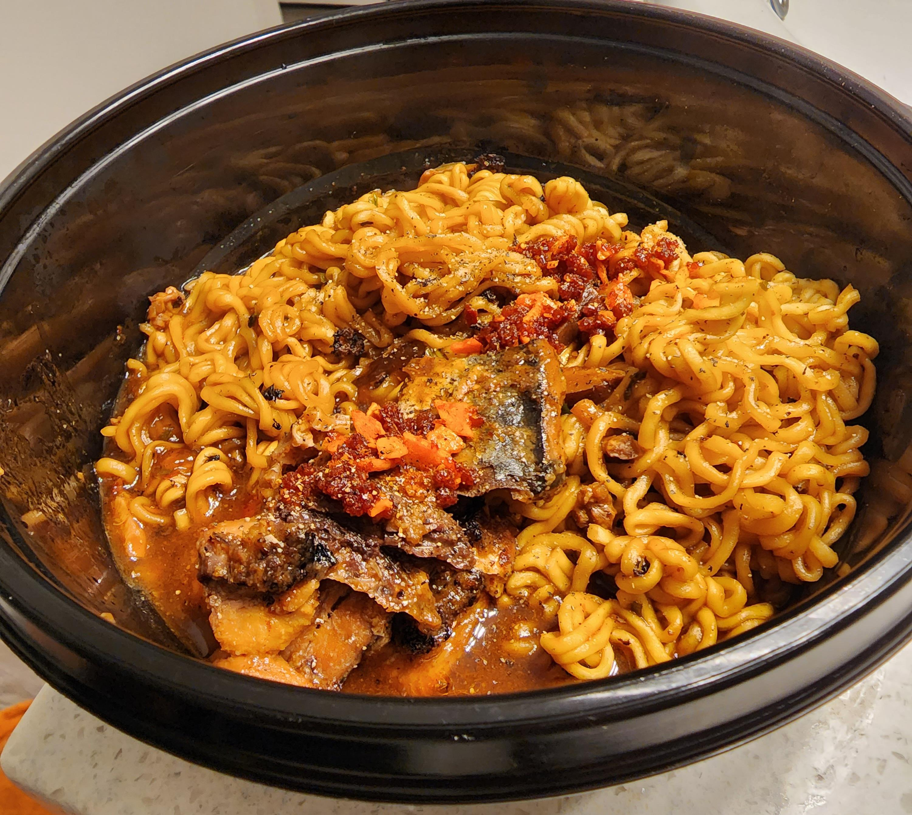

Spicy Mackerel Ramen

Don't let the picture fool you; with a bit of sautéed broccolini this is conniption delicious. Rich and spicy, it's one of those meals that you physically can't stop yourself from wolfing down. With a short prep time this instant ramen pick-me-up is the perfect afternoon lunch or late night supper. Let's get into it!
Ingredients:
- 1 packet Shin Ramyun noodles
- 1.5 tbsp butter
- 1 4.05 oz can of mackerel, in oil or in brine
- 2 oz of broccolini
- Salt and pepper to taste
- Red pepper flakes
- Water
Steps:
- Heat 1/2 a tablespoon of butter in a skillet over medium heat. Add a pinch of red pepper flakes and cook for 30 seconds to infuse the butter with flavor.
- Add the broccolini and a little salt. Cook, tossing occasionally for 2 minutes.
- You will now need to create steam in the pan to help the broccolini soften. Add a couple tablespoons of water and cover the pan.
- Reduce the heat to medium low and cook, covered, for 3-5 minutes or until the vegetables are tender and bright green, then remove from the heat.
- Cook ramen according to package instructions. Add the flavor packet. Discard the dried vegetable packet.
- Add 1 tbsp of cold butter to the noodles in the broth. Stir and let it emulsify.
- Transfer your noodles to a bowl. Top with your broccolini and the canned mackerel.
- Enjoy!